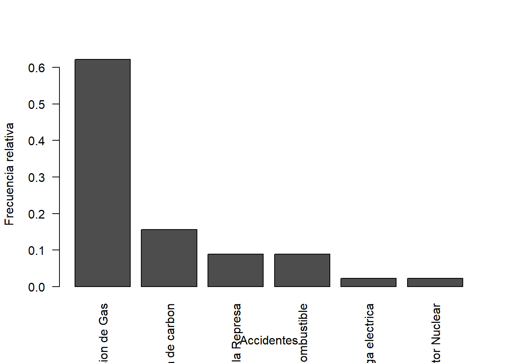
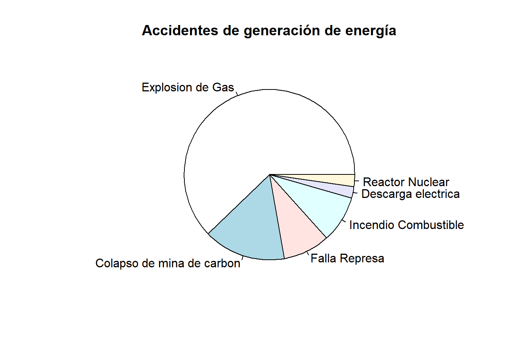
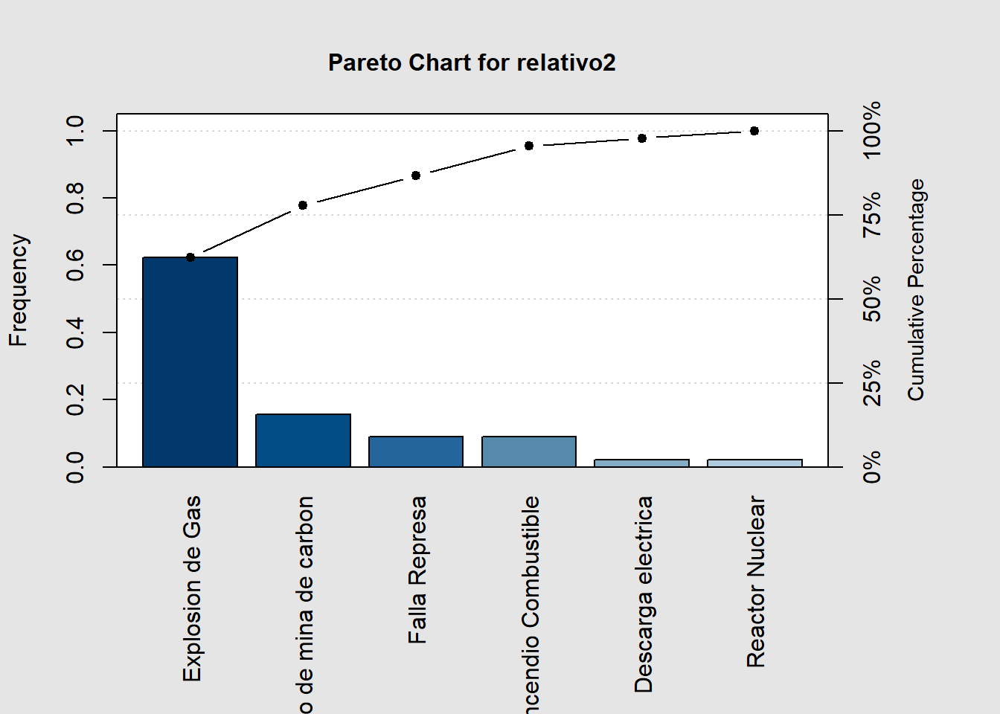
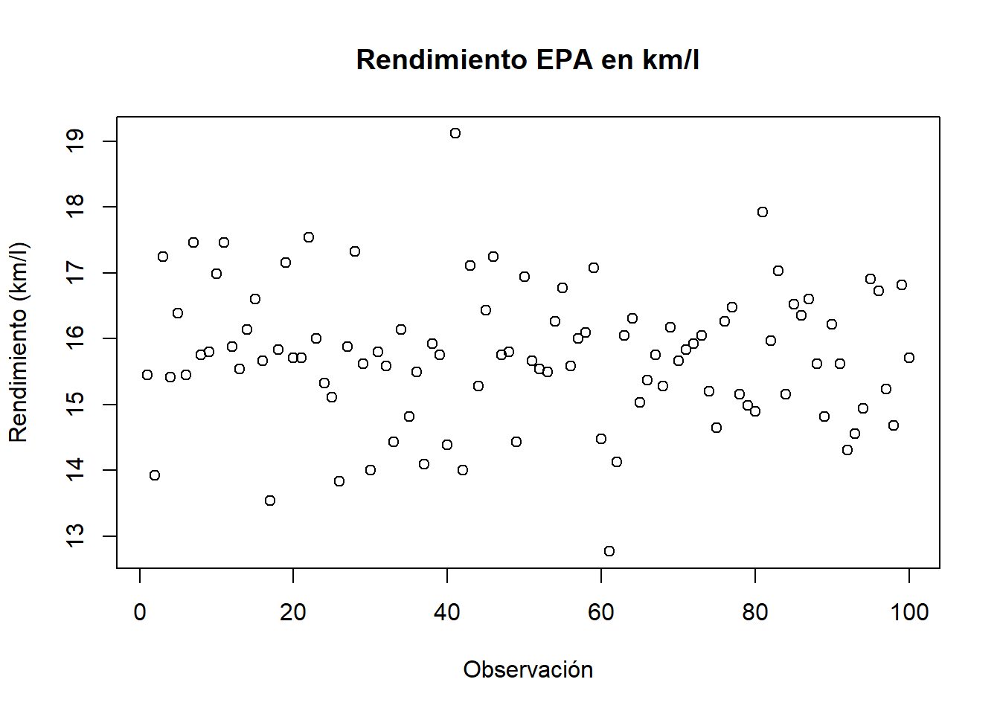
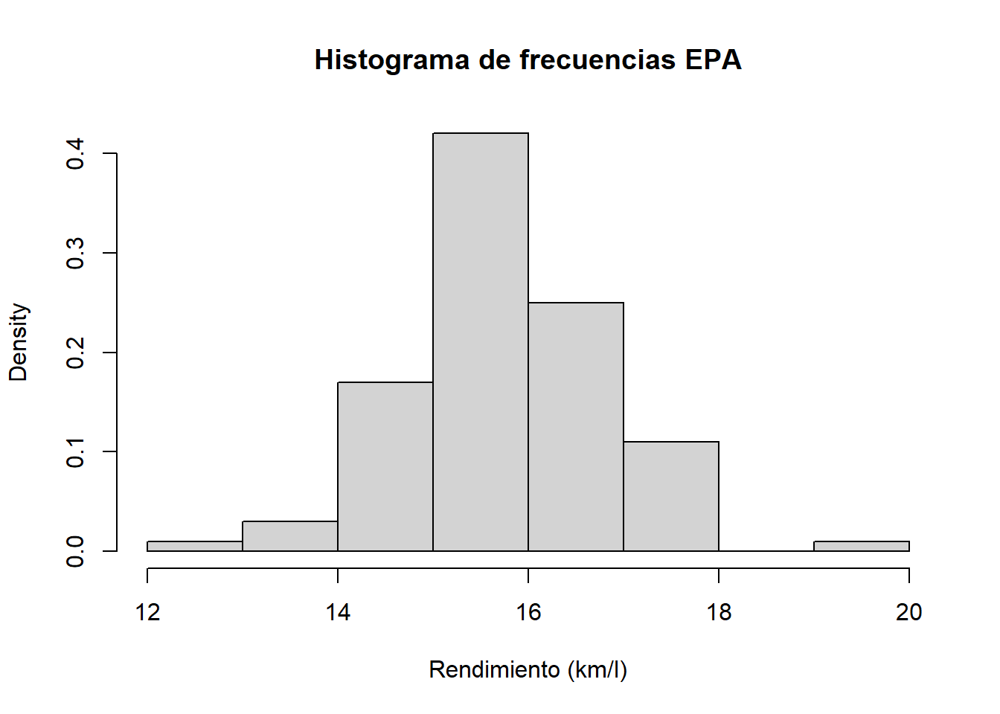
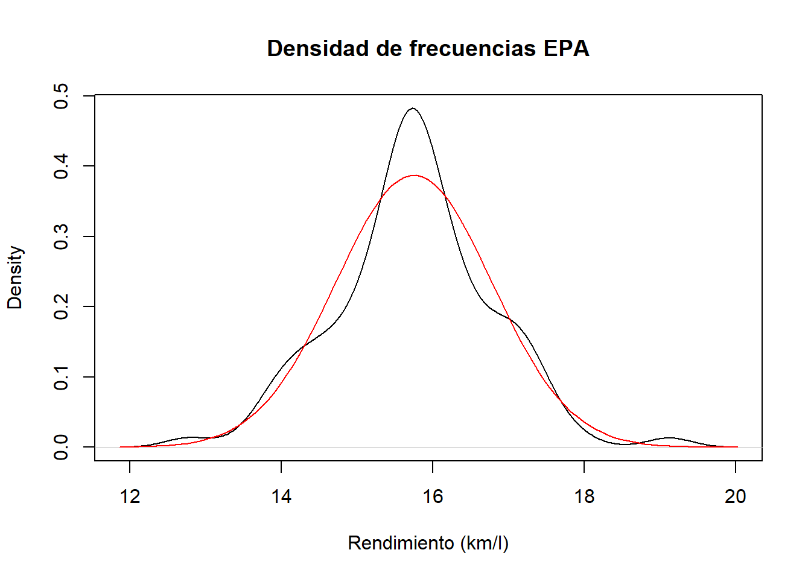
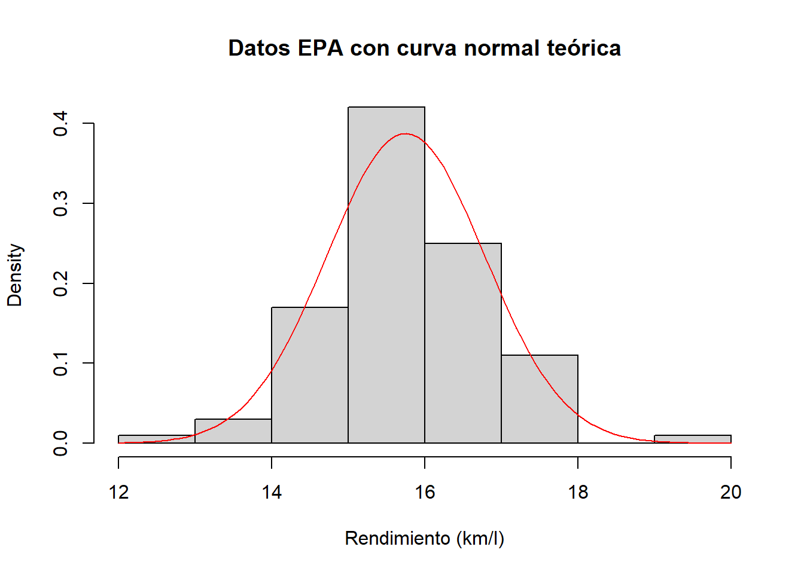
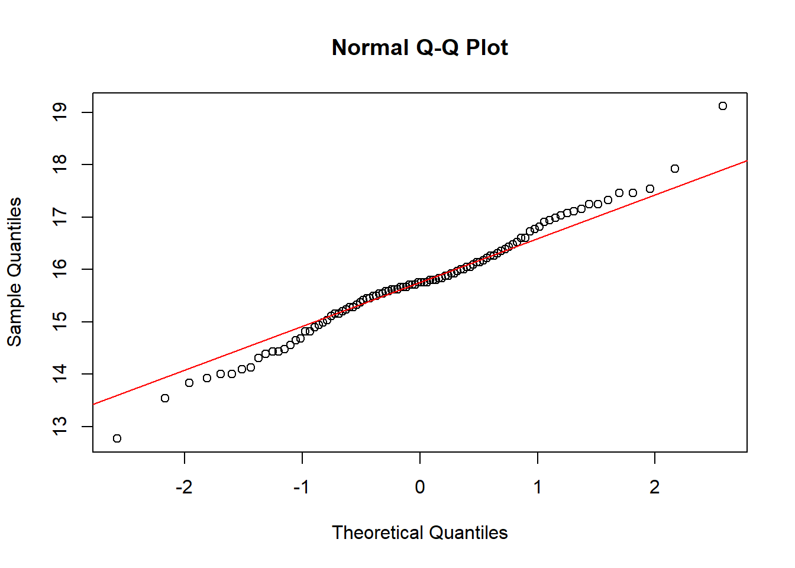

# Cargamos las librerías necesarias para el laboratorio
library(openxlsx) # leer archivos Excel (.xlsx)
library(qcc) # diagrama de Pareto
library(modeest) # moda (mfv = most frequent value)
library(psych) # funciones de estadística descriptiva (útil en otros labs)
library(moments) # skewness y kurtosisCapitulo 1 Introduccion_y_Estadistica_Descriptiva
Material descargable
Descargar PDF de contenidos teóricos
El PDF “Capitulo 1 Introduccion_y_Estadistica_Descriptiva” desarrolla los siguientes temas principales (a modo de índice):
- 1.1 Introducción
- Definición y términos básicos de la estadística.
- Diferencia entre estadística descriptiva e inferencial.
- Importancia de la variabilidad.
- Definición y términos básicos de la estadística.
- 1.2 Elementos Fundamentales de Estadística
- Población, muestra, unidad experimental.
- Variable, parámetros poblacionales y estimadores muestrales.
- Ejemplos de problemas descriptivos y de inferencia.
- Población, muestra, unidad experimental.
- 1.3 Tipos de Datos
- Datos cuantitativos.
- Datos cualitativos (nominales y ordinales).
- Por qué el tipo de dato determina qué herramientas estadísticas usar.
- Datos cuantitativos.
- 1.4 Estadística Descriptiva
- Métodos gráficos y numéricos para describir datos cualitativos.
- Métodos gráficos para describir datos cuantitativos.
- Métodos numéricos para describir datos cuantitativos.
- Medidas de tendencia central (media, mediana, moda).
- Medidas de variación (rango, varianza, desviación estándar).
- Medidas de posición relativa (percentiles, cuartiles, z-scores).
- Medidas de asimetría (skewness).
- Medidas de concentración de datos (kurtosis).
- Métodos gráficos y numéricos para describir datos cualitativos.
En este laboratorio, llevaremos varios de estos conceptos a la práctica usando R.
Configuración inicial en R
En esta sección cargaremos las librerías necesarias y definiremos la ruta a los datos.
Carga de librerías
Tip
Si alguna librería no está instalada, puedes hacerlo con:
install.packages("nombre_del_paquete")Por ejemplo: install.packages("openxlsx").
Definir la ruta de trabajo
Vamos a guardar la ruta donde están los datos en un objeto llamado ruta_datos.
Esto hace que el código sea más fácil de mantener si cambiamos de carpeta en el futuro.
# Definimos la ruta donde están los archivos de datos del laboratorio.
# IMPORTANTE: Ajusta esta ruta si tu carpeta tiene otro nombre o ubicación.
ruta_datos <- "C:/Users/manue/Desktop/lab-econometria/labs_epg/data_epg"
# Podemos verificar el contenido de la carpeta (opcional)
list.files(ruta_datos) [1] "annos_mantenimiento.xlsx" "auto_peso_consumo.xlsx"
[3] "costos.xlsx" "data_PCA_Decathlon.csv"
[5] "data_PCA_ExpertWine.csv" "Ejemplo1.xlsx"
[7] "Ejemplo2.xlsx" "millaje.txt"
[9] "orange.csv" "tabla_ejemplo_R.xlsx"
Nota
En R es recomendable usar / (slash) en lugar de **** en las rutas de Windows.
Por eso escribimos "C:/Users/manue/Desktop/..." en lugar de "C:Users...".
Ejemplo 1: Accidentes y métodos gráficos para datos cualitativos
En este ejemplo trabajamos con datos cualitativos (categorías de accidentes) y sus frecuencias.
La idea es:
- Leer una tabla de frecuencias desde Excel.
- Calcular las frecuencias relativas.
- Representar los datos con:
- Gráfico de barras.
- Gráfico de torta (pie).
- Diagrama de Pareto.
- Gráfico de barras.
Cargar los datos del Ejemplo 1
# Construimos la ruta completa al archivo Excel del Ejemplo 1
archivo_ejemplo1 <- file.path(ruta_datos, "Ejemplo1.xlsx")
# Leemos el archivo Excel
datos1 <- read.xlsx(
archivo_ejemplo1,
sheet = "Hoja1",
colNames = TRUE
)
# Vemos las primeras filas para entender la estructura
head(datos1) Categoria Frecuencia Acumulado
1 Explosion de Gas 28 28
2 Colapso de mina de carbon 7 35
3 Falla Represa 4 39
4 Incendio Combustible 4 43
5 Descarga electrica 1 44
6 Reactor Nuclear 1 45
Nota
En este archivo esperamos tener al menos estas columnas:
Categoria: tipo de accidente.
Frecuencia: cuántas veces se observó cada tipo de accidente.
Cálculo de frecuencias relativas
La frecuencia relativa se define como:
\[\text{frecuencia relativa} = \frac{\text{frecuencia de la categoría}}{\text{total de observaciones}}. \]
# Total de accidentes (suma de las frecuencias)
total <- sum(datos1$Frecuencia)
# Creamos una nueva columna con la frecuencia relativa
datos1$relativa <- datos1$Frecuencia / total
# Revisamos la tabla con frecuencia absoluta y relativa
datos1 Categoria Frecuencia Acumulado relativa
1 Explosion de Gas 28 28 0.62222222
2 Colapso de mina de carbon 7 35 0.15555556
3 Falla Represa 4 39 0.08888889
4 Incendio Combustible 4 43 0.08888889
5 Descarga electrica 1 44 0.02222222
6 Reactor Nuclear 1 45 0.02222222Ahora queremos una versión “lista para graficar” de las frecuencias relativas:
# Convertimos la columna relativa en un vector fila
relativo <- t(as.data.frame(datos1$relativa))
# Asignamos como nombres de columnas las categorías
colnames(relativo) <- datos1$Categoria
relativo Explosion de Gas Colapso de mina de carbon Falla Represa
datos1$relativa 0.6222222 0.1555556 0.08888889
Incendio Combustible Descarga electrica Reactor Nuclear
datos1$relativa 0.08888889 0.02222222 0.02222222
Tip
t()transpone la tabla (cambia filas por columnas).
- Esto nos deja un vector fila donde cada columna es una categoría distinta.
Gráfico de barras
El gráfico de barras es una forma estándar de mostrar frecuencias (o frecuencias relativas) de variables cualitativas.
barplot(
relativo,
xlab = "Accidentes",
ylab = "Frecuencia relativa",
las = 2 # rota las etiquetas del eje X para que se lean mejor
)
Nota
- Cada barra representa una categoría de accidente.
- La altura de la barra representa la frecuencia relativa (proporción del total).
las = 2rota las etiquetas del eje horizontal para evitar que se encimen.
Gráfico de torta (pie chart)
El gráfico de torta muestra la proporción de cada categoría como una “porción” de un círculo.
pie(
relativo,
labels = datos1$Categoria,
main = "Accidentes de generación de energía"
)
Tip
- El gráfico de torta es útil para resaltar la proporción de cada categoría.
- Sin embargo, para comparar categorías muy parecidas entre sí, un gráfico de barras suele ser más claro.
Diagrama de Pareto
El diagrama de Pareto ordena las categorías de mayor a menor frecuencia y muestra también la acumulación.
# Creamos un vector nombrado: cada elemento es la frecuencia relativa,
# y el nombre es la categoría
relativo2 <- datos1$relativa
names(relativo2) <- datos1$Categoria
# Ajustamos márgenes del gráfico (opcional)
par(mar = rep(4, 4))
pareto.chart(relativo2)
Pareto chart analysis for relativo2
Frequency Cum.Freq. Percentage Cum.Percent.
Explosion de Gas 0.62222222 0.62222222 62.22222222 62.22222222
Colapso de mina de carbon 0.15555556 0.77777778 15.55555556 77.77777778
Falla Represa 0.08888889 0.86666667 8.88888889 86.66666667
Incendio Combustible 0.08888889 0.95555556 8.88888889 95.55555556
Descarga electrica 0.02222222 0.97777778 2.22222222 97.77777778
Reactor Nuclear 0.02222222 1.00000000 2.22222222 100.00000000
Nota
El diagrama de Pareto permite:
- Identificar cuáles son las categorías más frecuentes (las más importantes).
- Visualizar la acumulación: por ejemplo, ver qué porcentaje del total representan las primeras 2 o 3 categorías.
Esto es muy útil en gestión para aplicar el principio de 80/20:
una pequeña cantidad de causas suele explicar gran parte de los efectos.
Ejemplo 2: Rendimiento de vehículos y estadística descriptiva
En este ejemplo trabajaremos con datos cuantitativos: rendimiento de vehículos medido por la EPA (Environmental Protection Agency).
Pasos principales:
- Convertir las unidades de rendimiento de millas/galón a km/litro.
- Explorar los datos con:
- Gráfico simple.
- Histograma.
- Densidad estimada y comparación con la normal.
- Boxplot.
- Gráfico simple.
- Calcular medidas descriptivas:
- Media, mediana, moda, rango, desviación estándar, coeficiente de variación.
- Media, mediana, moda, rango, desviación estándar, coeficiente de variación.
- Evaluar la normalidad:
- Prueba de Shapiro-Wilk.
- Prueba de Kolmogorov-Smirnov.
- Gráfico QQ.
- Skewness y kurtosis.
- Prueba de Shapiro-Wilk.
Cargar los datos del Ejemplo 2
archivo_ejemplo2 <- file.path(ruta_datos, "Ejemplo2.xlsx")
datos2 <- read.xlsx(
archivo_ejemplo2,
sheet = "Hoja1",
colNames = TRUE
)
head(datos2) EPA_Mileage_Ratings_milla_galon
1 36.3
2 32.7
3 40.5
4 36.2
5 38.5
6 36.3
Nota
En este archivo esperamos tener una columna llamada, por ejemplo:
EPA_Mileage_Ratings_milla_galon: rendimiento en millas por galón.
Conversión de unidades: de millas/galón a km/litro
Recordemos las equivalencias:
- 1 milla ≈ 1.6093 kilómetros.
- 1 galón ≈ 3.78 litros.
Entonces, el factor de conversión es:
\[\text{factor} = \frac{1.6093}{3.78}.\]
milla <- 1.6093
galon <- 3.78
factorconversion <- milla / galon
factorconversion[1] 0.4257407Aplicamos este factor a la columna de rendimiento:
datos2$EPA_Mileage_Ratings_km_l <- factorconversion * datos2$EPA_Mileage_Ratings_milla_galon
# Resumen de la nueva variable
summary(datos2$EPA_Mileage_Ratings_km_l) Min. 1st Qu. Median Mean 3rd Qu. Max.
12.77 15.19 15.75 15.75 16.32 19.12
Tip
Crear una nueva columna (en lugar de sobrescribir la original) permite:
- Conservar las unidades originales.
- Comparar resultados y evitar errores de interpretación.
Gráfico simple de la serie
plot(
datos2$EPA_Mileage_Ratings_km_l,
main = "Rendimiento EPA en km/l",
xlab = "Observación",
ylab = "Rendimiento (km/l)"
)
Este gráfico muestra cómo varía el rendimiento (en km/l) a lo largo de las observaciones.
Histograma y densidad
Histograma de frecuencias (escala de densidad)
hist(
datos2$EPA_Mileage_Ratings_km_l,
main = "Histograma de frecuencias EPA",
xlab = "Rendimiento (km/l)",
freq = FALSE # FALSE => el eje Y representa densidad, no conteos
)
Densidad estimada y comparación con la normal
# Estimación de la densidad empírica
plot(
density(datos2$EPA_Mileage_Ratings_km_l),
main = "Densidad de frecuencias EPA",
xlab = "Rendimiento (km/l)"
)
# Añadimos la curva de una Normal con misma media y desviación estándar
curve(
dnorm(
x,
mean = mean(datos2$EPA_Mileage_Ratings_km_l, na.rm = TRUE),
sd = sd(datos2$EPA_Mileage_Ratings_km_l, na.rm = TRUE)
),
add = TRUE,
col = "red"
)
Nota
- La curva negra representa la densidad empírica estimada a partir de los datos.
- La curva roja representa una distribución normal teórica con la misma media y desviación estándar que la muestra.
- Comparar ambas curvas nos da una idea visual de qué tan “normal” parece la distribución.
Boxplot (gráfico de cajas)
El boxplot resume:
- Mediana.
- Cuartiles (Q1 y Q3).
- Rango intercuartílico.
- Posibles valores atípicos (outliers).
boxplot(
datos2$EPA_Mileage_Ratings_km_l,
main = "Gráfico de cajas 1",
ylab = "Rendimiento (km/l)",
outline = TRUE # muestra los posibles outliers
)
Medidas descriptivas: centro y dispersión
Calculamos:
- Media.
- Mediana.
- Moda (usando
mfv).
- Rango.
- Desviación estándar.
- Coeficiente de variación.
media <- mean(datos2$EPA_Mileage_Ratings_km_l, na.rm = TRUE)
mediana <- median(datos2$EPA_Mileage_Ratings_km_l, na.rm = TRUE)
moda <- mfv(datos2$EPA_Mileage_Ratings_km_l) # most frequent value
rango <- range(datos2$EPA_Mileage_Ratings_km_l, na.rm = TRUE)
desv <- sd(datos2$EPA_Mileage_Ratings_km_l, na.rm = TRUE)
coeficiente_variacion <- desv / media
media[1] 15.74985mediana[1] 15.75241moda[1] 15.75241rango[1] 12.77222 19.11576desv[1] 1.029397coeficiente_variacion[1] 0.06535917
Nota
- La media es el promedio aritmético.
- La mediana es el valor central de los datos ordenados.
- La moda es el valor que más se repite.
- El coeficiente de variación es adimensional y se interpreta como:
\[CV = \frac{\text{desviación estándar}}{\text{media}}. \]
Es útil para comparar la variabilidad relativa entre diferentes variables.
Pruebas de normalidad
Aplicamos dos pruebas clásicas de normalidad:
Prueba de Shapiro-Wilk
shapiro.test(datos2$EPA_Mileage_Ratings_km_l)
Shapiro-Wilk normality test
data: datos2$EPA_Mileage_Ratings_km_l
W = 0.98814, p-value = 0.5185- H0: los datos provienen de una distribución normal.
- H1: los datos NO provienen de una distribución normal.
Si el p-valor es menor a 0.05, rechazamos H0 y concluimos que los datos no son normales.
Prueba de Kolmogorov-Smirnov
ks.test(
datos2$EPA_Mileage_Ratings_km_l,
pnorm,
mean(datos2$EPA_Mileage_Ratings_km_l, na.rm = TRUE),
sd(datos2$EPA_Mileage_Ratings_km_l, na.rm = TRUE)
)
Asymptotic one-sample Kolmogorov-Smirnov test
data: datos2$EPA_Mileage_Ratings_km_l
D = 0.067046, p-value = 0.7597
alternative hypothesis: two-sidedAquí comparamos la distribución muestral con una normal teórica con:
- media = media muestral
- desviación estándar = desviación estándar muestral
Simulación de una distribución normal comparable
Generamos datos simulados desde una distribución normal con la misma media y desviación estándar que los datos reales, y comparamos los histogramas.
set.seed(123) # para reproducibilidad
datos_simulados <- rnorm(
1000,
mean = mean(datos2$EPA_Mileage_Ratings_km_l, na.rm = TRUE),
sd = sd(datos2$EPA_Mileage_Ratings_km_l, na.rm = TRUE)
)
# Histograma de los datos simulados
hist(
datos_simulados,
main = "Histograma de datos simulados (Normal)",
xlab = "Rendimiento (km/l)"
)
# Histograma de los datos reales con curva normal
hist(
datos2$EPA_Mileage_Ratings_km_l,
freq = FALSE,
main = "Datos EPA con curva normal teórica",
xlab = "Rendimiento (km/l)"
)
curve(
dnorm(
x,
mean = mean(datos2$EPA_Mileage_Ratings_km_l, na.rm = TRUE),
sd = sd(datos2$EPA_Mileage_Ratings_km_l, na.rm = TRUE)
),
add = TRUE,
col = "red"
)
Cuantiles y valores teóricos
Calculamos los cuantiles (percentiles) y luego los valores teóricos de una normal para los percentiles 25% y 75% usando qnorm.
# Cuantiles 0%, 25%, 50%, 75% y 100%
quantile(
datos2$EPA_Mileage_Ratings_km_l,
prob = c(0, 0.25, 0.5, 0.75, 1),
na.rm = TRUE
) 0% 25% 50% 75% 100%
12.77222 15.18830 15.75241 16.31651 19.11576 Ahora calculamos los valores que corresponderían al 25% y 75% bajo una distribución normal con la misma media y desviación estándar:
z_0.75 <- mean(datos2$EPA_Mileage_Ratings_km_l, na.rm = TRUE) +
qnorm(0.75) * sd(datos2$EPA_Mileage_Ratings_km_l, na.rm = TRUE)
z_0.25 <- mean(datos2$EPA_Mileage_Ratings_km_l, na.rm = TRUE) +
qnorm(0.25) * sd(datos2$EPA_Mileage_Ratings_km_l, na.rm = TRUE)
z_0.75[1] 16.44417z_0.25[1] 15.05554Gráfico QQ (quantile-quantile)
El gráfico QQ compara los cuantiles de los datos con los cuantiles de una normal teórica.
qqnorm(datos2$EPA_Mileage_Ratings_km_l)
qqline(datos2$EPA_Mileage_Ratings_km_l, col = "red")
- Si los puntos siguen aproximadamente la línea roja, la distribución de los datos es cercana a la normal.
- Desviaciones sistemáticas indican diferencias respecto a la normalidad (colas más pesadas, asimetría, etc.).
Asimetría (skewness) y curtosis (kurtosis)
Finalmente, medimos la forma de la distribución mediante:
- Skewness: mide la asimetría.
- Kurtosis: mide el “apuntamiento” o peso de las colas comparado con una normal.
skewness(datos2$EPA_Mileage_Ratings_km_l, na.rm = TRUE)[1] 0.05014194kurtosis(datos2$EPA_Mileage_Ratings_km_l, na.rm = TRUE)[1] 3.672556
Nota
Si skewness > 0: asimetría hacia la derecha (cola más larga a la derecha).
Si skewness < 0: asimetría hacia la izquierda.
Para la curtosis (definición clásica):
- Una distribución normal tiene kurtosis ≈ 3.
- Si kurtosis > 3: colas más pesadas (leptocúrtica).
- Si kurtosis < 3: colas más ligeras (platicúrtica).
- Una distribución normal tiene kurtosis ≈ 3.
Resumen final del Ejemplo 2
En este ejemplo aprendimos a:
- Convertir unidades (millas/galón → km/l).
- Explorar datos cuantitativos con gráficos:
- Plot simple, histograma, densidad, boxplot y QQ-plot.
- Plot simple, histograma, densidad, boxplot y QQ-plot.
- Calcular medidas descriptivas:
- Media, mediana, moda, rango, desviación estándar, coeficiente de variación.
- Media, mediana, moda, rango, desviación estándar, coeficiente de variación.
- Evaluar la normalidad de una variable usando:
- Pruebas de hipótesis (Shapiro-Wilk, Kolmogorov-Smirnov).
- Comparación visual con una distribución normal.
- Skewness y kurtosis.
- Pruebas de hipótesis (Shapiro-Wilk, Kolmogorov-Smirnov).
Estos pasos son la base para análisis más avanzados en econometría, donde suponemos frecuentemente normalidad en los errores o en ciertas variables
Capitulo 1 Introduccion_y_Estadistica_Descriptiva Capitulo 1 Introduccion_y_Estadistica_Descriptiva Capitulo 1 Introduccion_y_Estadistica_Descriptiva Repositorio de datos, códigos y proyectos de estudiantes Repositorio de datos, códigos y proyectos de estudiantes